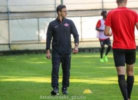

Also on VenetoGol

Promozione. Al Vazzola …
Si separano le strade con l'allenatore Fabrizio Mazzer e con il DS Danilo …
Union QdP 2 : 3 9 giornata …
Partita Montello - Union QdP 2 : 3 9 giornata Campionato Promozione Girone E …
Da 0-3 a 4-3: Julia …
Longarone Alpina sconfitto nell'unico ottavo di finale giocato alle 14.30
Svolta tecnica a Spinea? …
Secondo indiscrezioni non ancora confermate, la società avrebbe deciso di …
Eccellenza: il resoconto …
Nuovo passo falso del Treviso, sconfitto dal Portomansuè e ora con …
Liapiave 2 : 1 15 giornata …
Partita Giorgione - Liapiave 2 : 1 15 giornata Campionato Eccellenza …
Brusco stop per la Dolomiti: il …
Serie D. Vittoria ampiamente meritata per i veronesi di mister Donati

Rumors sul nuovo tecnico …
Tra i papabili per la panchina rossostellata ci sarebbe Simone Depoliti, …